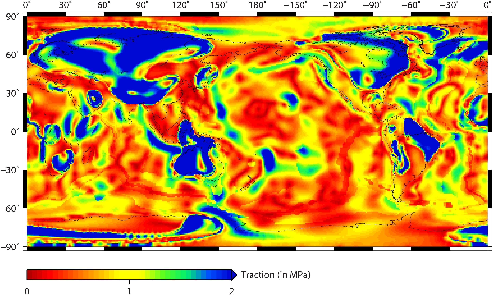
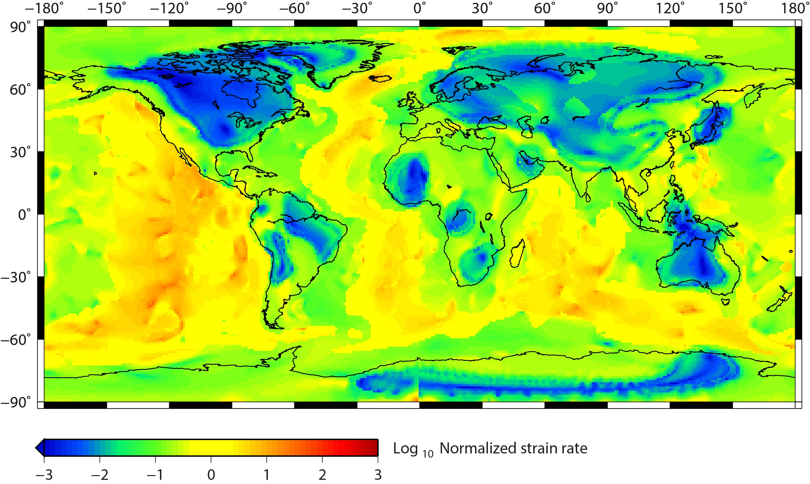

I am jotting down my research works done in reverse chronological order. The top most one is the recent most research work that I have published/ going to publish.
To understand the evolution of cratons we develop time dependent mantle convection models in CitcomS.
Very few studies have attempted such time-dependent approach in a 3-D spherical models to quantify
stability of cratons. Yoshida (2010, 2012) had approached such time-dependent forward mantle convection
models in restricted spherical domain. Also the location of their continental lithosphere was hypothetical.
Our study (
Paul et al. 2020 ) is the first study to model the evolution of cratons for last 410 Ma using
realistic location of cratons and reconstructed veolocity boundary condition.
We use a reconstruction model given by Methews et al. 2016 and reconstructed back the location of cratons
till 409 Ma. Using the reconstructed locations we develop mantle convection models using reconstructed plate
veolocities as prescribed boundary condition.
In our study we use cratons and asthenosphere of different viscosity and investigate which viscosity combination can help in stability of cratons.
This study has developed numerical model of the intensity of present-day deformation at the base of the lithosphere using a 3-D spherical mantle convection code CitcomS. Here lithosphere thickness is obtained from the model of Conrad and Lithgow-Bertelloni (2006) and tractions have been calculated at the variable base of the lithosphere. Traction is the resistive force generated as a response to convective stresses exerted by the mantle.
Our model incorporates lateral viscosity variation to specify high viscosity thick cratons and weak plate boundaries. We predict because of high thickness and viscosity deformation under cratons is very low. Such low intensity of deformation helps cratons to survive for billions of years.
 will update soon
will update soon